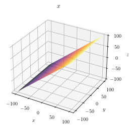
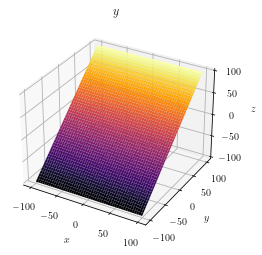
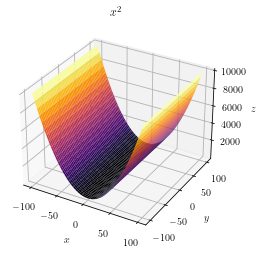
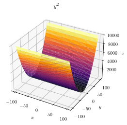
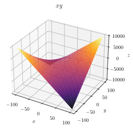

Figure 3: The same (coordinates) tile of the second
image of the stockholm sequence. This is the predicted
()
frame.
ME (Motion Estimation) is the process of determining the MVs (Motion Vectors) that describe the mapping of the pixels from one frame (2D image) to another.
Temporal correlation between video frames1 can be removed by MC (Motion Compensation). MC implies to decrease (usually by substracting a prediction frame) the amount of information in the frames. The removed information must be available at both, the encoder and the decoder side, in order to make this a reversible process.
Specifically, a MCP (MC Predictor) inputs one (or more) reference frame(s) , and a motion vectors field that indicates how to project onto the predicted frame , and outputs a prediction frame
| (1) |
In this milestone we analyze different algorithms to determine (in a futher milestone we will see how to remove the ’s information from ). At this moment, for the sake of simplicity, in the rest of this discussion it will be supposed that the number of reference frames in only 1.
Our main objective is to minimize the differences (for example, the L distance) between (the predicted frame) and (the prediction frame), i.e. minimizing
| (2) |
in order to get that will be more compressible than . To achieve this, we can compute that simply minimizes the L energy of , , or we can compute a that also describes the Optical Flow [3] (OF) between the pixels of and , that although not necessarily has to minimize , tries to show the true movement of the pixels between the both frames. This second option has the advantage of generating more visually pleasing reconstructions when the code-stream is partially received and makes easier to predict the content of the motion fields.
The first type of techniques are simply called “ME techniques”, and are usually faster2 than the second type, based on the estimation of the OF.
Now, let’s see some of the most used techniques for estimating the motion between two frames. Notice that, in general, better estimations can be found if we suppose motion models such as that the objects exhibit inertia. However, this case will not be considered for now.
Block-based ME is the simplest ME algorithm (see the Fig. 1), is divided in blocks of (for example) 16x16 pixels, and we can use the (R)MSE that measures the distance in L (also known as the Euclidean distance) between each block of and its surrounding pixels in (the so called search area) [5]. For each block, a motion vector that indicates the best match (smaller distance) is found. The set of motion vectors form the motion vectors field that obviously, except for a block size of 1x1, will be less dense than and . Notice, however, that, it is not a good idea to use such a small block size because, in general, the motion vectors will not describe the true motion in the scene.
As it can be seen in the Figures 2, 3, 4, 5, and 6, the MVs generated by block-based ME can significantly decrease the entropy.
However, as it can be seen in the Figure 7, the motion information computed by the block-based ME algorithm not always represents the true motion in the scene in the case of using block-based matching. This can be a drawback, for example, for solving object tracking problems. In the case of video coding, the main disadvantage of such issue is that the entropy of the motion fields increases, which also decreases the compression ratio.
A better approximation to the OF for small block sizes can be found if we allow the blocks to overlap in [4], case in which the block size for performing the comparisons must be larger. Again, as it happens with the disjoint case, only the non overlaped pixels are used for building the prediction (see the Fig. 8). Obviously, the main drawback of this technique is that it can be more computationally demanding than the previous one.
The dense ME algorithm can obtain better predictions than the block-based one, as it can be seen in the Figures 9 and 10. The MVs are also more coherent (see Figure 11).
An improvement of the previous technique can also average the overlaped pixels in the prediction frame , as it has been shown in the Fig. 12.
 |  |  |  |  |  |
| No motion | Constant velocity in | Constant velocity in | Constant acceleration in | Constant acceleration in | Constant accelarion in diagonal |
The motion can be estimated also in a transformed domain. One of these estimators is the Farnebäck’s algorithm [2], which uses the transform defined by the basis functions
| (3) |
(see the Figure 13). In this transform domain, which is applied by overlapped regions, the corresponding subbands quantify the tendency of the image to increase its intensity in different 2D directions, and therefore, it is more efficient to know the direction in which the objects are moving.
The Farneback’s ME is a dense ME, and it provides subpixel interpolation because the MVs are real numbers (see the Figures 14, 15 and 16). Notice that the prediction is the best of the all tested algorithms, probably by the subpixel accuracy.
ANNs (Artifical Neural Networks) can be trained to estimate the motion between frames [1]. For the training of ANNs, animation videos are generally used where the motion fields are known with precision.
Using the encoding system described in the Figure 17, find and that minimize in the RD domain (the RD curve of)
| (4) |
Please, finish this milestone before the next class session.
None.
[1] A. Dosovitskiy, P. Fischer, E. Ilg, P. Hausser, C. Hazirbas, V. Golkov, P. Van Der Smagt, D. Cremers, and T. Brox. FlowNet: Learning Optical Flow with Convolutional Networks. In Proceedings of the IEEE international conference on computer vision, pages 2758–2766, 2015.
[2] G. Farnebäck. Two-Frame Motion Estimation Based on Polynomial Pxpansion. In Scandinavian conference on Image analysis, pages 363–370. Springer, 2003.
[3] B.K.P. Horn and B.G. Schunck. Determining Optical Flow. In Techniques and Applications of Image Understanding, volume 281, pages 319–331. International Society for Optics and Photonics, 1981.
[4] M.T. Orchard and G.J. Sullivan. Overlapped Block Motion Compensation: An Estimation-Theoretic Approach. IEEE Transactions on Image Processing, 3(5):693–699, 1994.
[5] S. Zhu and K.-K. Ma. A New Diamond Search Algorithm for Fast Block-Matching Motion Estimation. IEEE transactions on Image Processing, 9(2):287–290, 2000.